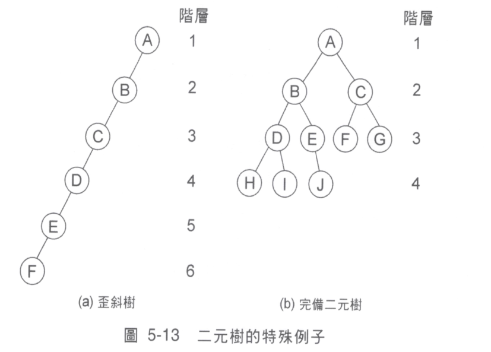

Properties of Binary tree
V: vertex
E: edge
\[
V=E+1
\]
proof
Using induction.
-
Let V=1,
Since E=0
Hence V=E+1
-
Suppose
\(
1\leq k\leq n
\rightarrow
V=k, E=k-1
\) is right.
-
To proof V=k+1 is right.
E=(k-1)+1=k.
\(V\) split to
\( \{V_0, V_1, V_2,\dots, V_k \}\)
\( V_0 \) is root.
\( \{V_1, V_2,\dots,V_k \}\) is set of sum of vertex of subtree of \( V_0 \).
\(
E=E_1+E_2+\dots+E_k+k
\)
The k is number of connecting of \(\{V_1,V_2,\dots,V_k\}\)
\(
V_1 = E_1 +1
\)
\(
V_2 = E_2 +1
\)
\(
\dots
\)
\(
V_k = E_k +1
\)
\( V_1+ V_2+\dots+V_k \)
\(
=
(E_1+1)+(E_2+1)+\dots+(E_k+1)=E_1+E_2+\dots+E_k+k
\)
\(
\rightarrow
V = V_0 +(V_1+V_2+\dots+V_k), \because V_0 \text{ is root}
\therefore V_0= 1
\)
\(
\rightarrow
V=(V_1+V_2+\dots+V_k)+1
\)
\(
\rightarrow
V=(E_1+E_2+\dots+E_k+k)+1
\)
\(
\rightarrow
V=E+1
\)
\(
\because E=k
\)
\(
\therefore V=k+1
\)
Q.E.D.
skew tree && complete binary tree
